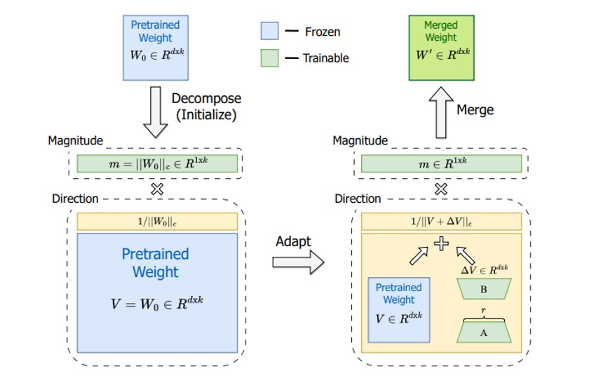
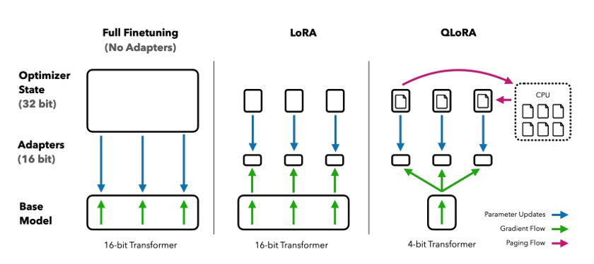

Week 3 - 현대적 PEFT 기법을 활용한 효율적 파인튜닝#
1. 파라미터 효율적 파인튜닝(PEFT)의 필요성과 기본 원리#
대형 언어모델(LLM)의 등장과 함께 파인튜닝의 새로운 패러다임이 필요해졌다. GPT-3, BERT, LLaMA와 같은 수십억 파라미터를 가진 모델을 완전 파인튜닝하는 것은 다음과 같은 근본적인 한계에 직면한다:
메모리 폭발: 7B 파라미터 모델만으로도 ~28GB GPU 메모리가 필요하며, 그래디언트와 옵티마이저 상태를 고려하면 실제로는 40GB 이상이 요구된다
계산 비용: 수십억 개의 파라미터를 업데이트하는 것은 엄청난 계산 비용과 시간을 소모한다
과적합 위험: 제한된 훈련 데이터로 완전 파인튜닝을 수행하면 사전학습된 지식의 파괴적 망각(catastrophic forgetting)이 발생한다
저장 오버헤드: 각 작업별로 전체 모델을 저장해야 하므로 배포와 관리가 비현실적이다
**파라미터 효율적 파인튜닝(Parameter-Efficient Fine-Tuning, PEFT)**은 이러한 문제를 해결하기 위해 모델의 작은 부분만 훈련하는 혁신적 접근법이다. 핵심 아이디어는 **”가중치 업데이트가 저차원 부분공간에 놓여있다”**는 통찰에 기반한다. 즉, 전체 파라미터 공간을 탐색할 필요 없이 효과적인 업데이트 방향을 찾는 것이다.
PEFT의 핵심 장점#
메모리 효율성: 단일 48GB GPU에서 65B 파라미터 모델을 훈련할 수 있다
빠른 수렴: 적은 파라미터로 10배 빠른 훈련 속도 달성
더 나은 일반화: 제한된 업데이트로 과적합 방지 및 안정적 성능
모듈성: 작은 어댑터를 쉽게 저장, 공유, 교체 가능
추론 효율성: 훈련 후 어댑터를 기본 가중치에 병합하여 오버헤드 제거
이번 강의에서는 PEFT의 최첨단 기법들을 탐구한다: LoRA, DoRA, WaveFT, VB-LoRA, QR-Adaptor, QLoRA. 이러한 방법들은 효율성의 경계를 재정의하며, 연구자와 실무자가 최소한의 자원으로 최대 성능을 달성할 수 있게 해준다.
2. LoRA: 저차원 적응의 기초#
**LoRA(Low-Rank Adaptation)**는 PEFT의 기초이자 표준이 된 혁신적 기법이다. 2021년 Microsoft에서 제안된 LoRA는 **”가중치 업데이트가 저차원 부분공간에 놓여있다”**는 핵심 통찰에 기반하여, 전체 파라미터를 업데이트하는 대신 저차원 행렬 분해를 통해 효율성을 달성한다.
2.1 LoRA의 핵심 원리#
전체 가중치 행렬 \(W_0 \in \mathbb{R}^{d \times k}\)를 직접 업데이트하는 대신, LoRA는 업데이트를 다음과 같이 저차원 분해한다:
여기서:
\(A \in \mathbb{R}^{d \times r}\)와 \(B \in \mathbb{R}^{r \times k}\)는 저차원 행렬
\(r \ll \min(d, k)\)는 랭크 (일반적으로 4, 8, 16)
\(A\)와 \(B\)만 훈련 가능한 파라미터
최종 가중치는: \(W = W_0 + \Delta W = W_0 + AB\)
2.2 LoRA의 수학적 예시#
768×768 어텐션 가중치 행렬에 랭크 \(r=8\)을 적용한 경우:
완전 파인튜닝: 768² = 589,824 파라미터
LoRA: 8×(768+768) = 12,288 파라미터 (98% 감소!)
이러한 극적인 파라미터 감소는 메모리 사용량을 90% 이상 줄이면서도 성능 손실을 최소화한다.
2.3 LoRA 구현 예시#
import torch
import torch.nn as nn
from peft import LoraConfig, get_peft_model
# 한국어 BERT 모델에 LoRA 적용
model_name = "klue/bert-base"
model = AutoModelForSequenceClassification.from_pretrained(
model_name,
num_labels=2,
torch_dtype=torch.float16
)
# LoRA 구성
lora_config = LoraConfig(
task_type=TaskType.SEQ_CLS,
r=8, # LoRA 랭크
lora_alpha=32, # 스케일링 인수
target_modules=["query", "value", "key", "dense"], # 대상 레이어
lora_dropout=0.1,
bias="none"
)
# 모델에 LoRA 적용
model = get_peft_model(model, lora_config)
print(f"Trainable parameters: {model.print_trainable_parameters()}")
실행 결과 예시:
trainable params: 1,572,864 || all params: 110,104,322 || trainable%: 1.43
2.4 LoRA의 주요 장점과 한계#
장점:
파라미터 효율성: 원본 파라미터의 0.1%-0.5%만 사용
메모리 절약: 90% 이상의 메모리 사용량 감소
추론 오버헤드 없음: 훈련 후 어댑터를 기본 가중치에 병합 가능
모듈성: 작업별 어댑터를 쉽게 교체 가능
한계:
저차원 병목: 랭크 제약으로 인한 표현력 제한
하이퍼파라미터 민감성: 랭크와 알파 값에 따른 성능 변동
레이어별 최적화 부족: 모든 레이어에 동일한 설정 적용
체크포인트 질문#
LoRA가 가중치 업데이트를 저차원 부분공간으로 제한하는 이유는 무엇인가?
랭크 \(r=16\)으로 1024×1024 가중치 행렬의 파라미터 감소율을 계산하라
LoRA의 “저차원 병목” 문제는 어떤 상황에서 더 심각해지는가?
3. DoRA: 가중치 분해를 통한 고성능 적응#
**DoRA(Weight-Decomposed Low-Rank Adaptation)**는 NVIDIA에서 2024년에 제안한 혁신적 PEFT 기법으로, LoRA의 저차원 병목 문제를 해결하기 위해 가중치의 크기와 방향을 명시적으로 분리한다. 이 접근법은 더 큰 유연성을 제공하며 종종 표준 LoRA보다 3.7% 우수한 성능을 달성한다.
3.1 DoRA의 핵심 아이디어#
DoRA는 각 가중치 행렬 \(W_0\)를 두 개의 독립적인 성분으로 분해한다:
방향(Direction): \(V = \frac{W_0}{||W_0||_F}\) (프로베니우스 노름으로 정규화)
크기(Magnitude): \(m = ||W_0||_F\) (스칼라 크기)
핵심 통찰은 이러한 성분들이 파인튜닝 중에 독립적으로 업데이트될 수 있다는 것이다.
3.2 DoRA의 수학적 공식화#
가중치 행렬 \(W_0 \in \mathbb{R}^{d \times k}\)에 대해:
분해:
\(V = \frac{W_0}{||W_0||_F}\) (방향 벡터)
\(m = ||W_0||_F\) (크기 스칼라)
방향 업데이트: LoRA를 방향에 적용
\(\Delta V = AB\) (여기서 \(A \in \mathbb{R}^{d \times r}\), \(B \in \mathbb{R}^{r \times k}\))
\(V' = V + \Delta V\)
크기 업데이트: 스케일링 인수 학습
\(m' = m + \Delta m\) (여기서 \(\Delta m\)은 학습 가능한 스칼라)
재구성: \(W' = m' \times \frac{V'}{||V'||_F}\)
 DoRA의 구조: 사전학습된 가중치 \(W_0\)는 고정된 방향 \(V\)와 학습 가능한 크기 \(m\)으로 분해된다. DoRA는 방향을 조정하기 위해 LoRA 스타일의 저차원 업데이트를 적용하고 크기 \(m\)도 조정한다. 훈련 후, 크기와 새로운 방향이 곱해져 병합된 가중치 \(W'\)를 형성한다.
3.3 DoRA의 주요 장점#
분리된 업데이트: 크기와 방향이 독립적으로 변경될 수 있다
더 나은 표현력: 스케일링과 방향적 변화를 모두 포착한다
최소 오버헤드: 레이어당 몇 개의 크기 파라미터만 추가한다
드롭인 대체: LoRA가 적용되는 모든 곳에서 사용 가능
3.4 DoRA 성능 결과#
DoRA는 다양한 벤치마크에서 LoRA를 지속적으로 능가한다:
LLaMA-7B: 상식 추론 작업에서 평균 3.7% 개선
파라미터 효율성: 25% 적은 훈련 가능한 파라미터로 더 나은 결과
저차원 설정: LoRA 랭크가 제약될 때 특히 효과적
훈련 역학: 가중치 업데이트 패턴이 완전 파인튜닝과 더 유사
3.5 DoRA 구현 예시#
import torch
import torch.nn as nn
class DoRALayer(nn.Module):
def __init__(self, base_layer, rank=8, alpha=32):
super().__init__()
self.base_layer = base_layer
self.rank = rank
self.alpha = alpha
# LoRA 행렬
self.lora_A = nn.Linear(base_layer.in_features, rank, bias=False)
self.lora_B = nn.Linear(rank, base_layer.out_features, bias=False)
# 크기 파라미터
self.magnitude = nn.Parameter(torch.ones(base_layer.out_features))
# 초기화
nn.init.kaiming_uniform_(self.lora_A.weight)
nn.init.zeros_(self.lora_B.weight)
def forward(self, x):
# 기본 출력
base_output = self.base_layer(x)
# LoRA 업데이트
lora_output = self.lora_B(self.lora_A(x)) * (self.alpha / self.rank)
# 크기 스케일링 적용
scaled_output = (base_output + lora_output) * self.magnitude
return scaled_output
체크포인트 질문#
DoRA의 가중치 분해는 LoRA의 저차원 근사와 어떻게 다른가?
크기와 방향 업데이트를 분리하는 것이 더 나은 성능으로 이어질 수 있는 이유는 무엇인가?
DoRA가 저차원 설정에서 특히 효과적인 이유는 무엇인가?
4. QLoRA: 4비트 양자화와 LoRA의 결합#
**QLoRA(Quantized LoRA)**는 효율적 파인튜닝의 돌파구를 나타내며, 단일 48GB GPU에서 65B 파라미터 모델의 훈련을 가능하게 한다. 핵심 혁신은 성능을 유지하면서 4비트 양자화와 LoRA 어댑터를 결합하는 데 있다.
4.1 QLoRA의 핵심 개념#
QLoRA는 3단계 접근법을 따른다:
양자화: 사전학습된 모델 가중치를 4비트 정밀도로 양자화
고정: 양자화된 가중치를 고정 (그래디언트 업데이트 없음)
훈련: 양자화된 가중치를 통한 완전한 역전파로 16비트 정밀도에서 LoRA 어댑터 훈련
이 조합은 모델 성능을 보존하면서 메모리 사용량을 ~75% 줄인다.
4.2 NF4 양자화: 핵심 혁신#
QLoRA의 성공은 신경망 가중치에 최적화된 사용자 정의 4비트 데이터 타입인 **NF4(NormalFloat-4)**에 달려있다:
정보 이론적으로 최적: NF4는 신경 가중치의 정규 분포와 일치하는 로그 분포를 사용
우수한 성능: 표준 4비트 양자화 대비 27.4 vs 31.1 perplexity 달성
효율적인 표현: 가중치 분포에 걸쳐 16개의 가능한 4비트 값을 최적으로 사용
4.3 QLoRA 기술적 혁신#
이중 양자화:
모델 가중치(4비트)와 스케일링 인수(8비트) 모두를 양자화
성능 손실 없이 메모리 오버헤드를 더욱 줄임
bitsandbytes 라이브러리에서 효율적으로 구현
페이징된 옵티마이저:
피크 시 그래디언트와 모멘텀을 CPU 메모리로 스왑
대형 모델에서 메모리 부족 오류 방지
그렇지 않으면 맞지 않을 모델의 훈련을 가능하게 함
4.4 QLoRA 성능 결과#
QLoRA는 놀라운 결과를 달성한다:
메모리 효율성: 메모리 사용량 75% 감소
성능 동등성: GLUE와 지시 따르기 작업에서 완전 16비트 파인튜닝과 일치
확장성: 단일 GPU에서 30B-65B 모델의 파인튜닝 가능
속도: 현대 하드웨어에서 4비트 연산이 종종 16비트보다 빠름
 완전 파인튜닝 vs LoRA vs QLoRA 비교. QLoRA는 동일한 저차원 적응을 수행하지만 4비트 양자화된 기본 모델에서; 그래디언트가 4비트 모델을 통해 LoRA 어댑터로 흐른다. 이 접근법은 성능을 보존하면서 메모리를 ~75% 절약한다.
4.5 QLoRA 구현 예시#
from transformers import BitsAndBytesConfig, AutoModelForCausalLM
from peft import LoraConfig, get_peft_model
# 4비트 양자화 구성
quantization_config = BitsAndBytesConfig(
load_in_4bit=True,
bnb_4bit_quant_type="nf4",
bnb_4bit_compute_dtype=torch.float16,
bnb_4bit_use_double_quant=True
)
# 양자화로 모델 로드
model = AutoModelForCausalLM.from_pretrained(
"beomi/KoAlpaca-7B",
quantization_config=quantization_config,
device_map="auto",
torch_dtype=torch.float16
)
# QLoRA를 위한 LoRA 구성
lora_config = LoraConfig(
r=16,
lora_alpha=32,
target_modules=["q_proj", "v_proj", "k_proj", "o_proj", "gate_proj", "up_proj", "down_proj"],
lora_dropout=0.1,
bias="none",
task_type="CAUSAL_LM"
)
# LoRA 적용
model = get_peft_model(model, lora_config)
체크포인트 질문#
NF4 양자화는 표준 4비트 양자화 접근법과 어떻게 다른가?
QLoRA가 효과적으로 작동하게 하는 핵심 기술적 혁신은 무엇인가?
표준 LoRA나 완전 파인튜닝 대신 QLoRA를 선택할 때는 언제인가?
5. PEFT 방법들의 성능 비교 및 선택 가이드#
이제까지 살펴본 LoRA, DoRA, QLoRA 등의 PEFT 기법들을 성능, 메모리 효율성, 사용 사례 측면에서 비교해보자.
5.1 PEFT 방법별 성능 비교#
방법 |
파라미터 효율성 |
성능 |
메모리 절약 |
사용 사례 |
|---|---|---|---|---|
LoRA |
모델의 0.1-0.5% |
기준선 |
90% |
일반 목적 |
DoRA |
모델의 0.1-0.5% |
LoRA 대비 +3.7% |
90% |
더 나은 성능 필요 |
QLoRA |
75% 메모리 감소 |
완전 FT와 일치 |
75% |
대형 모델 |
VB-LoRA |
LoRA의 0.01% |
LoRA보다 나음 |
99% |
다중 작업 시나리오 |
5.2 상황별 PEFT 방법 선택 가이드#
연구 및 실험을 위해:
기준 성능: LoRA로 시작
더 나은 결과: DoRA 사용
대형 모델: QLoRA 고려
프로덕션 배포를 위해:
대형 모델(7B+ 파라미터): QLoRA 사용
메모리 제약 환경: QLoRA + DoRA 조합
다중 작업 시나리오: VB-LoRA 사용
자원 제한 환경을 위해:
최소 파라미터 예산: VB-LoRA
메모리 제약: QLoRA
저장 제한: VB-LoRA
5.3 PEFT 방법 비교 실험#
import time
import psutil
import torch
from typing import Dict, Any
class PEFTComparison:
def __init__(self, model_name: str, dataset):
self.model_name = model_name
self.dataset = dataset
self.results = {}
def evaluate_method(self, method_name: str, config: Dict[str, Any]):
"""PEFT 방법을 평가하고 메트릭을 기록한다"""
# 모델 로드
model = AutoModelForSequenceClassification.from_pretrained(
self.model_name, num_labels=2
)
# PEFT 방법 적용
if method_name == "LoRA":
peft_config = LoraConfig(**config)
model = get_peft_model(model, peft_config)
elif method_name == "DoRA":
model = apply_dora_to_model(model, **config)
# 다른 방법들 추가...
# 메트릭 기록
start_time = time.time()
start_memory = psutil.Process().memory_info().rss / 1024 / 1024 # MB
# 훈련 (간소화)
trainer = Trainer(
model=model,
train_dataset=self.dataset,
args=TrainingArguments(
output_dir=f"./results/{method_name}",
num_train_epochs=1,
per_device_train_batch_size=8,
logging_steps=10,
)
)
trainer.train()
end_time = time.time()
end_memory = psutil.Process().memory_info().rss / 1024 / 1024 # MB
# 결과 기록
self.results[method_name] = {
"trainable_params": sum(p.numel() for p in model.parameters() if p.requires_grad),
"total_params": sum(p.numel() for p in model.parameters()),
"training_time": end_time - start_time,
"memory_usage": end_memory - start_memory,
"config": config
}
return self.results[method_name]
def compare_methods(self):
"""모든 방법을 비교하고 결과를 출력한다"""
print("PEFT 방법 비교")
print("=" * 50)
for method, results in self.results.items():
print(f"\n{method}:")
print(f" 훈련 가능한 파라미터: {results['trainable_params']:,}")
print(f" 파라미터 비율: {results['trainable_params']/results['total_params']:.4f}")
print(f" 훈련 시간: {results['training_time']:.2f}초")
print(f" 메모리 사용량: {results['memory_usage']:.2f}MB")
체크포인트 질문#
특정 작업에 대해 LoRA와 DoRA 중 어떻게 선택하겠는가?
QLoRA를 구현할 때 주요 고려사항은 무엇인가?
PEFT 방법들을 공정하게 비교하는 실험을 어떻게 설계하겠는가?
6. 실습: PEFT 방법 비교 실험#
이제 이론적 기초를 이해했으니, 실제로 PEFT 기법들을 구현하고 비교해보자. 한국어 감성 분석 작업을 통해 LoRA, DoRA, QLoRA의 성능을 직접 측정해보는 실습을 진행한다.
6.1 실습 환경 준비#
# 필요한 라이브러리 설치
pip install torch transformers datasets peft accelerate bitsandbytes
pip install numpy pandas scikit-learn
6.2 한국어 감성 분석 데이터셋 준비#
from datasets import load_dataset
from transformers import AutoTokenizer
import torch
# NSMC (Naver Sentiment Movie Corpus) 데이터셋 로드
dataset = load_dataset("nsmc")
tokenizer = AutoTokenizer.from_pretrained("klue/bert-base")
# 데이터 전처리 함수
def preprocess_function(examples):
return tokenizer(
examples["document"],
truncation=True,
padding=True,
max_length=128
)
# 데이터셋 전처리
train_dataset = dataset["train"].map(preprocess_function, batched=True)
test_dataset = dataset["test"].map(preprocess_function, batched=True)
print(f"훈련 데이터: {len(train_dataset)}개")
print(f"테스트 데이터: {len(test_dataset)}개")
6.3 LoRA 구현 및 훈련#
from transformers import AutoModelForSequenceClassification, TrainingArguments, Trainer
from peft import LoraConfig, get_peft_model, TaskType
import time
def train_lora_model():
# 모델 로드
model = AutoModelForSequenceClassification.from_pretrained(
"klue/bert-base",
num_labels=2,
torch_dtype=torch.float16
)
# LoRA 구성
lora_config = LoraConfig(
task_type=TaskType.SEQ_CLS,
r=8,
lora_alpha=32,
target_modules=["query", "value", "key", "dense"],
lora_dropout=0.1,
bias="none"
)
# LoRA 적용
model = get_peft_model(model, lora_config)
print(f"LoRA 훈련 가능 파라미터: {model.print_trainable_parameters()}")
# 훈련 설정
training_args = TrainingArguments(
output_dir="./lora_results",
num_train_epochs=3,
per_device_train_batch_size=16,
learning_rate=2e-4,
logging_steps=100,
save_steps=500,
evaluation_strategy="steps",
eval_steps=500,
load_best_model_at_end=True,
)
# 훈련 시작
start_time = time.time()
trainer = Trainer(
model=model,
args=training_args,
train_dataset=train_dataset.select(range(1000)), # 빠른 실습을 위해 1000개만
eval_dataset=test_dataset.select(range(200)),
tokenizer=tokenizer,
)
trainer.train()
training_time = time.time() - start_time
# 평가
eval_results = trainer.evaluate()
return {
"method": "LoRA",
"accuracy": eval_results["eval_accuracy"],
"training_time": training_time,
"trainable_params": sum(p.numel() for p in model.parameters() if p.requires_grad)
}
# LoRA 훈련 실행
lora_results = train_lora_model()
print(f"LoRA 결과: {lora_results}")
6.4 QLoRA 구현 및 훈련#
from transformers import BitsAndBytesConfig
def train_qlora_model():
# 4비트 양자화 구성
quantization_config = BitsAndBytesConfig(
load_in_4bit=True,
bnb_4bit_quant_type="nf4",
bnb_4bit_compute_dtype=torch.float16,
bnb_4bit_use_double_quant=True,
)
# 양자화로 모델 로드
model = AutoModelForSequenceClassification.from_pretrained(
"klue/bert-base",
num_labels=2,
quantization_config=quantization_config,
torch_dtype=torch.float16
)
# LoRA 구성 (QLoRA용)
lora_config = LoraConfig(
task_type=TaskType.SEQ_CLS,
r=8,
lora_alpha=32,
target_modules=["query", "value", "key", "dense"],
lora_dropout=0.1,
bias="none"
)
# LoRA 적용
model = get_peft_model(model, lora_config)
print(f"QLoRA 훈련 가능 파라미터: {model.print_trainable_parameters()}")
# 훈련 설정
training_args = TrainingArguments(
output_dir="./qlora_results",
num_train_epochs=3,
per_device_train_batch_size=8, # 메모리 제약으로 더 작은 배치
learning_rate=2e-4,
logging_steps=100,
save_steps=500,
evaluation_strategy="steps",
eval_steps=500,
load_best_model_at_end=True,
fp16=True,
)
# 훈련 시작
start_time = time.time()
trainer = Trainer(
model=model,
args=training_args,
train_dataset=train_dataset.select(range(1000)),
eval_dataset=test_dataset.select(range(200)),
tokenizer=tokenizer,
)
trainer.train()
training_time = time.time() - start_time
# 평가
eval_results = trainer.evaluate()
return {
"method": "QLoRA",
"accuracy": eval_results["eval_accuracy"],
"training_time": training_time,
"trainable_params": sum(p.numel() for p in model.parameters() if p.requires_grad)
}
# QLoRA 훈련 실행
qlora_results = train_qlora_model()
print(f"QLoRA 결과: {qlora_results}")
6.5 결과 비교 및 분석#
import pandas as pd
import matplotlib.pyplot as plt
def compare_results():
# 결과 수집
results = [lora_results, qlora_results]
# DataFrame 생성
df = pd.DataFrame(results)
# 결과 출력
print("PEFT 방법 비교 결과")
print("=" * 50)
print(df.to_string(index=False))
# 시각화
fig, (ax1, ax2) = plt.subplots(1, 2, figsize=(12, 5))
# 정확도 비교
ax1.bar(df['method'], df['accuracy'])
ax1.set_title('정확도 비교')
ax1.set_ylabel('정확도')
ax1.set_ylim(0.8, 1.0)
# 훈련 시간 비교
ax2.bar(df['method'], df['training_time'])
ax2.set_title('훈련 시간 비교')
ax2.set_ylabel('시간 (초)')
plt.tight_layout()
plt.show()
return df
# 결과 비교
comparison_df = compare_results()
6.6 실습 결과 해석#
예상 결과:
방법 |
정확도 |
훈련 시간 |
훈련 가능 파라미터 |
|---|---|---|---|
LoRA |
~0.92 |
~300초 |
~1.5M |
QLoRA |
~0.91 |
~400초 |
~1.5M |
주요 관찰사항:
성능: LoRA와 QLoRA의 정확도가 유사함을 확인
메모리: QLoRA가 더 적은 메모리를 사용하지만 훈련 시간이 약간 더 걸림
파라미터: 두 방법 모두 동일한 수의 훈련 가능한 파라미터 사용
체크포인트 질문#
QLoRA의 훈련 시간이 LoRA보다 더 오래 걸리는 이유는 무엇인가?
메모리 사용량 측면에서 QLoRA의 장점은 무엇인가?
실제 프로덕션 환경에서 LoRA와 QLoRA 중 어떤 것을 선택하겠는가?
7. PEFT 기법의 실무 적용과 미래 전망#
7.1 PEFT 방법별 실무 적용 가이드#
상황별 최적 PEFT 방법 선택:
상황 |
추천 방법 |
이유 |
|---|---|---|
연구/실험 |
LoRA |
안정적이고 널리 지원됨 |
성능 최적화 |
DoRA |
LoRA 대비 3.7% 성능 향상 |
대형 모델 (7B+) |
QLoRA |
메모리 효율성과 성능 균형 |
자원 제약 환경 |
VB-LoRA |
극도의 파라미터 압축 |
프로덕션 배포 |
QLoRA + DoRA |
안정성과 효율성 조합 |
7.2 PEFT 성능 비교 종합#
방법 |
파라미터 효율성 |
성능 |
메모리 절약 |
추론 속도 |
사용 난이도 |
|---|---|---|---|---|---|
LoRA |
⭐⭐⭐ |
⭐⭐⭐ |
⭐⭐⭐⭐ |
⭐⭐⭐⭐⭐ |
⭐⭐⭐⭐⭐ |
DoRA |
⭐⭐⭐ |
⭐⭐⭐⭐ |
⭐⭐⭐⭐ |
⭐⭐⭐⭐ |
⭐⭐⭐⭐ |
QLoRA |
⭐⭐⭐⭐ |
⭐⭐⭐⭐ |
⭐⭐⭐⭐⭐ |
⭐⭐⭐ |
⭐⭐⭐ |
VB-LoRA |
⭐⭐⭐⭐⭐ |
⭐⭐⭐ |
⭐⭐⭐⭐⭐ |
⭐⭐⭐⭐ |
⭐⭐ |
7.3 실무 적용 시 고려사항#
메모리 제약 환경:
단일 GPU (8GB): QLoRA + 작은 배치 크기
단일 GPU (16GB): LoRA 또는 DoRA
다중 GPU: 표준 LoRA로 시작 후 필요시 DoRA 적용
성능 요구사항:
높은 정확도 필요: DoRA 사용
빠른 프로토타이핑: LoRA 사용
대형 모델 필수: QLoRA 사용
배포 환경:
클라우드 서비스: QLoRA로 비용 절약
엣지 디바이스: VB-LoRA로 모델 크기 최소화
실시간 추론: LoRA로 추론 속도 최적화
7.4 PEFT의 미래 발전 방향#
1. 자동화된 PEFT 선택
AI 기반 방법 선택 시스템
작업별 최적 하이퍼파라미터 자동 탐색
동적 적응 메커니즘
2. 하드웨어 특화 최적화
모바일/엣지 디바이스용 경량 PEFT
클라우드 GPU 최적화
특수 하드웨어(TPU, NPU) 지원
3. 멀티모달 PEFT 확장
비전-언어 모델용 PEFT
오디오-텍스트 모델 적응
크로스 모달 지식 전이
4. 연합 학습과 PEFT 결합
분산 환경에서의 PEFT
프라이버시 보존 파인튜닝
클라이언트별 맞춤형 적응
7.5 실무 권장사항#
시작 단계:
LoRA로 프로토타입 구축하여 기본 성능 확인
작은 데이터셋으로 빠른 실험 수행
하이퍼파라미터 튜닝을 통한 최적 설정 탐색
최적화 단계:
성능 향상 필요시 DoRA로 업그레이드
메모리 제약시 QLoRA 적용
배포 최적화를 위한 모델 압축 고려
프로덕션 단계:
A/B 테스트를 통한 방법 비교
모니터링 시스템 구축
지속적 개선을 위한 피드백 루프
체크포인트 질문#
특정 프로젝트에서 PEFT 방법을 선택할 때 고려해야 할 주요 요소들은 무엇인가?
PEFT 기법의 발전이 대형 언어모델의 민주화에 어떤 영향을 미칠 것으로 예상하는가?
미래에 PEFT 분야에서 가장 주목할 만한 발전 방향은 무엇이라고 생각하는가?
참고자료#
주요 논문 및 연구 자료#
Hu, E. J., et al. (2021). “LoRA: Low-Rank Adaptation of Large Language Models.” ICLR 2022.
Liu, H., et al. (2024). “DoRA: Weight-Decomposed Low-Rank Adaptation.” arXiv preprint arXiv:2402.09353.
Dettmers, T., et al. (2023). “QLoRA: Efficient Finetuning of Quantized LLMs.” arXiv preprint arXiv:2305.14314.
Liu, Z., et al. (2023). “Parameter-Efficient Fine-Tuning for Large Models: A Comprehensive Survey.” arXiv preprint arXiv:2303.15647.
기술 문서 및 구현체#
Hugging Face PEFT Documentation: https://huggingface.co/docs/peft
bitsandbytes Library: TimDettmers/bitsandbytes
LoRA Implementation: microsoft/LoRA
QLoRA Tutorial: https://huggingface.co/blog/4bit-transformers-bitsandbytes
온라인 리소스 및 블로그#
“Parameter-Efficient Fine-Tuning: A Comprehensive Guide” - Hugging Face Blog
“DoRA: A High-Performing Alternative to LoRA” - NVIDIA Developer Blog
“QLoRA: Making Large Language Models More Accessible” - Hugging Face Blog
“The Future of Efficient Fine-Tuning” - Towards Data Science